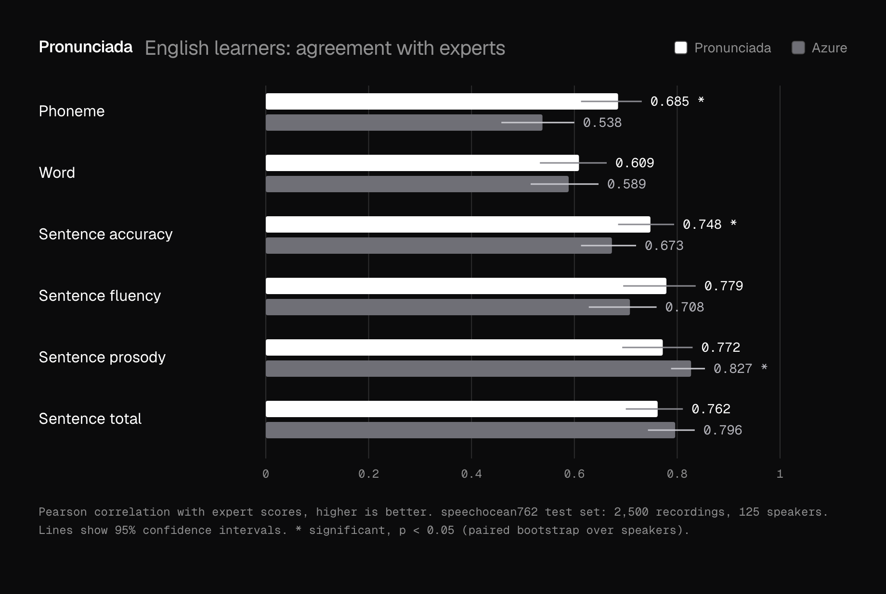
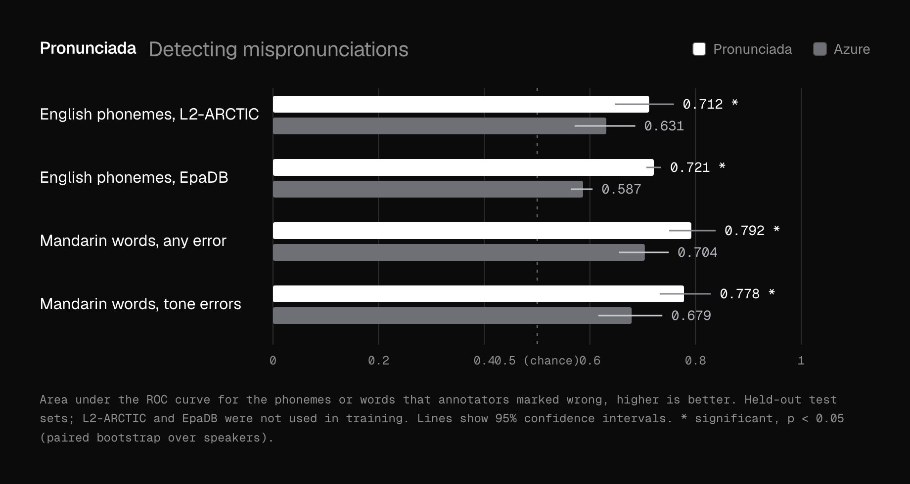
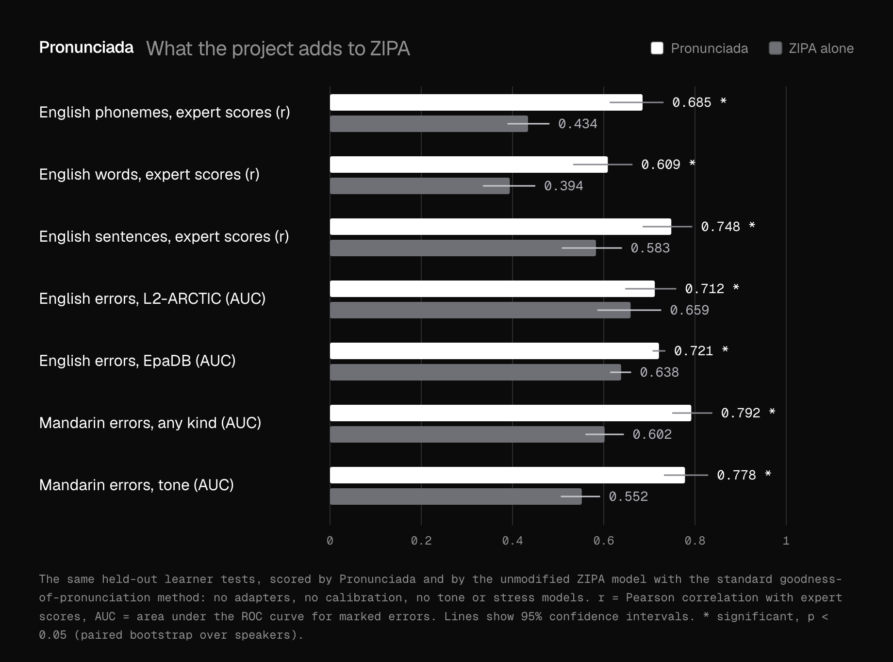
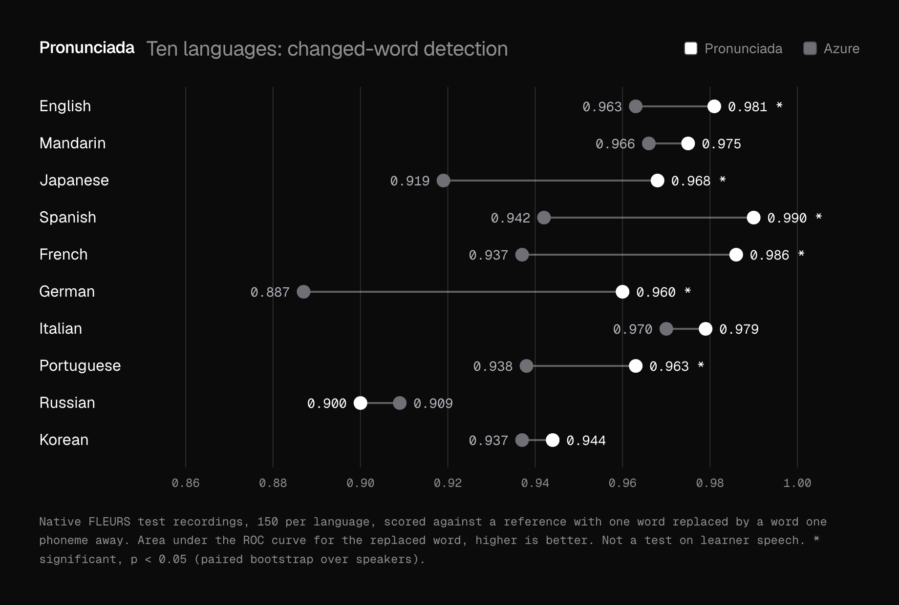
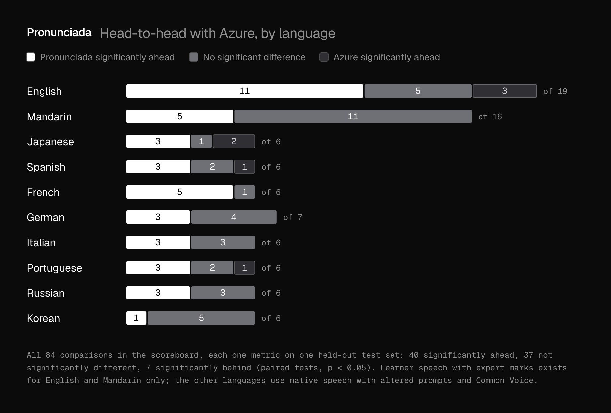

Open source
Pronunciada: on-device pronunciation assessment for ten languages
Pronunciada is an open-source Python library that scores how a sentence was read aloud. Given a recording and the reference text, it returns the probability that a human rater would accept each phoneme, each word and the sentence as a whole. It runs on CPU, and the audio does not leave the machine.
Language-learning applications usually get these scores from a cloud API, most often Microsoft Azure Pronunciation Assessment. Pronunciada was written for the Moglearn app so that scoring could run on the learner's device, and it was compared with Azure on the public corpora that have expert annotation. This page shows sample output and the main results. The code, the complete result tables and the scripts that produce them are in the repository.
The waveform is one recording from the speechocean762 test set with the probability Pronunciada gives each word. The corpus annotators marked the /l/ of “float” as dropped. The video (one minute, with sound) shows the command line scoring this recording, the demo scoring a Mandarin learner, and the benchmark charts.
Samples
The recordings below come from public research corpora. Each is shown with the output of version 1.0.0 at default settings: the probability that the sentence would be accepted, the words below 0.5 in red with their own probability, and the first coaching tip.
English learners
Recordings from the speechocean762 test set. “Annotators” are the corpus's five expert raters. In the first clip they marked the /l/ of “float” as dropped, and in the second the first vowel of “register”.
Mandarin learner
Recording from the OMPAL test set, a French-speaking learner. The teachers marked the tone of 口 as wrong. Pronunciada gives its two lowest tone probabilities to 四 and 口, but the word probabilities stay high, so no word is in red. See Limitations.
Native speakers
Recordings from the FLEURS test set. These show the output on speech with no expected errors.
Evaluation
Each comparison uses the Azure Pronunciation Assessment REST API (region westus, November 2026, one request per recording). Both systems received the same audio and reference text. An asterisk marks a difference that is significant in a paired bootstrap over speakers (p < 0.05).

English learners. Pronunciada agrees with the expert raters more closely than Azure at the phoneme level and for sentence accuracy. Azure is closer for sentence prosody.

Detecting what annotators marked wrong. L2-ARCTIC (speakers of six first languages) and EpaDB (Spanish-speaking learners) were not used to train or tune Pronunciada. The Mandarin rows are from the OMPAL test set: 21 French-speaking learners of Taiwan Mandarin.

What the project adds to the open model. “ZIPA alone” is the unmodified model scored with the standard goodness-of-pronunciation method, with no adapters, calibration, or tone and stress models. Over 60 test rows Pronunciada is significantly ahead in 45 and not significantly different in 15; ZIPA alone is not significantly ahead in any. The rows are in the baseline write-up.
No public learner corpus with expert annotation was found for the other eight languages. The next chart is a proxy test on native speech. Each recording is scored against a reference in which one word has been replaced by a word that differs by a single phoneme, and the figure is the area under the ROC curve for separating the replaced word from the unchanged ones.

This test measures whether a system detects a mismatch between audio and text. It does not measure accuracy on learner speech.

All 84 comparisons in the scoreboard. Pronunciada is significantly ahead in 40, not significantly different in 37 and significantly behind in 7: English sentence prosody, the native false-alarm rate in English, Japanese, Spanish and Portuguese, and two tests on Common Voice recordings.
Azure was not tuned on any of this data. Pronunciada's calibration models were fitted on the speechocean762 training set, FLEURS training and validation sets, and the OMPAL development speakers. Every figure on this page is from a held-out split.
Latency
| Model | 4 threads | 1 thread |
|---|---|---|
| fp32, 248 MB | 50 ms | 100 ms |
| int8, 67 MB | 40 ms | 65 ms |
Median time to score one recording, over 100 speechocean762 recordings with a mean length of 3.5 s, on an Apple M3 Pro without a GPU.
Method
No large model was trained for this project. The acoustic model is ZIPA (Zhu et al., ACL 2025), a phone recognizer trained on speech from many languages, used through ONNX Runtime.
- The reference text is converted to a phoneme sequence with per-language dictionaries and rules, including Mandarin tone sandhi and French liaison.
- ZIPA produces frame-level posteriors over IPA phones from the audio alone. It does not see the reference text. A small adapter per language corrects its systematic confusions.
- For each expected phoneme, the scorer compares the likelihood that it was produced with the likelihood of a substitution or a deletion. Each likelihood is a CTC forward score summed over all alignments, so the result does not depend on one forced alignment.
- Gradient-boosted calibration models, fitted on speech that experts scored, map this evidence to acceptance probabilities for phonemes, words and sentences. A strictness setting between 0 and 1 moves all of them together.
- Tone, stress, length and some consonant contrasts cannot be read from the phone posteriors. Separate small classifiers read ZIPA's intermediate layers for these.
The models trained for this project add about 10 MB to the package. The design document has the details.
Limitations
- Accuracy on learner speech has been measured for English and Mandarin only.
- English sentence prosody correlates less well with expert scores than Azure's (0.772 against 0.827).
- At default strictness, about 3% of a native speaker's words score below 0.6 in English, Japanese, Spanish and Portuguese, against about 2% for Azure.
- In Mandarin, a low tone probability on one syllable does not always lower the word probability, as in the sample above. Applications that grade tones should read the per-syllable tone probabilities.
- Coaching tips were tuned on English and Mandarin learners. On native FLEURS recordings, between 9% and 43% of sentences, depending on the language, still receive at least one pronunciation tip.
- Italian geminate consonants and Portuguese nasal vowels are detected poorly. Japanese pitch accent is not scored.
- The reference text is required. There are no iOS, Android or WebAssembly builds.
Usage
pip install pronunciada pronunciada check clip.wav "It was a beautiful day for a float" --lang en
The model is downloaded on first use. Mandarin and Japanese need the extras pronunciada[zh] and pronunciada[ja].
import pronunciada
result = pronunciada.score("clip.wav", "It was a beautiful day for a float", lang="en")
result.prob # sentence, 0 to 1
for word in result.words:
word.text, word.prob # word
for phone in word.phones:
phone.ipa, phone.prob # phoneme
result.coaching() # detected errors, most severe first
The library also has a local HTTP server, output in Azure's JSON layout, and an MCP server. These are documented in the README.
Apache-2.0, on GitHub
The code, the complete result tables and the scripts that produce them are in the repository.